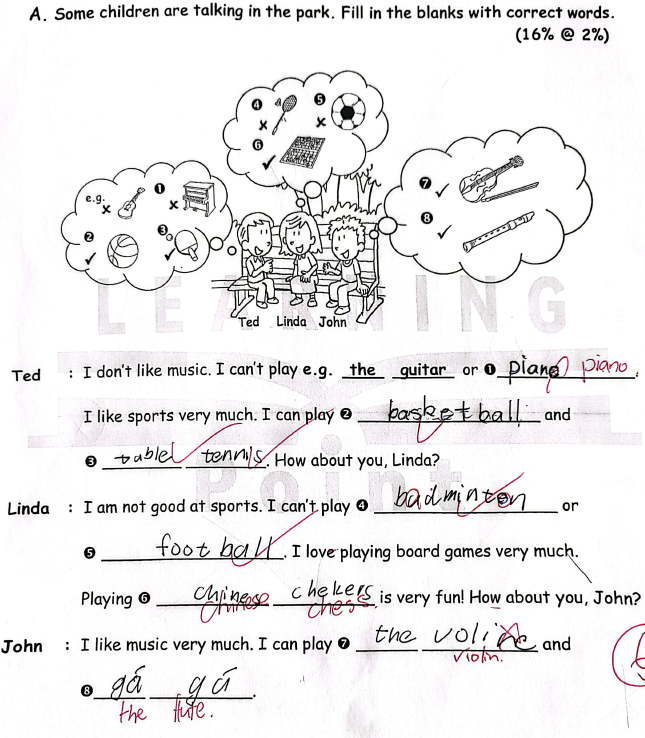
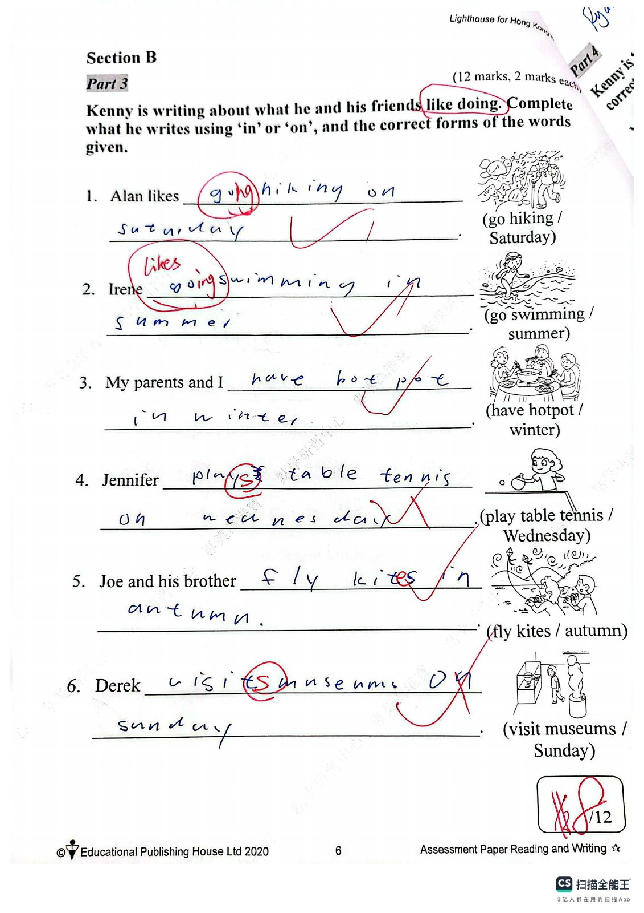

Answer: (a) 30468; (b) 86403
已掌握
| # | 单词/词组 | 中文意思 | 例句/说明 | 已掌握 |
|---|---|---|---|---|
| noun 名词 | ||||
| 1 | parents | 父母 | My parents love me. | |
| 2 | present | 礼物 | I got a present from my mother. | |
| 3 | rule | 规则 | We should follow the rules. | |
| 4 | stamp | 邮票 | I put a stamp on the postcard. | |
| 5 | hall | 大厅 | We meet in the school hall. | |
| 6 | twin | 双胞胎 | My twin brother and I have the same birthday. | |
| 7 | Tuesday | 周二 | We go swimming on Tuesday. | |
| 8 | role | 角色 | I have a role in the play. | |
| verb 动词 | ||||
| 9 | feed | 喂养 | I feed my fish every day. | |
| 10 | put away | 收拾、收纳 | Please put away your toys. | |
| 11 | have a bath | 洗澡 | I have a bath before bed. | |
| 12 | weigh | 称重 | We weigh the bag. | |
| 13 | feel | 感觉 | I feel happy today. | |
| phrase 短语 | ||||
| 14 | between ... and ... | 在……和……之间 | The park is between the bank and the school. | |
| 15 | turn right | 右转 | Turn right after the shop. | |
| 16 | wait a minute | 等一下 | Wait a minute, please. | |
| noun phrase 名词短语 | ||||
| 17 | swimming pool | 游泳池 | I swim in the swimming pool. | |
| pronoun 代词 | ||||
| 18 | they | 他们 | They are my friends. | |
| adjective/interjection 形容词/感叹词 | ||||
| 19 | welcome | 欢迎 | Welcome to our school. | |
| uncategorized 未分类 | ||||
| 20 | office | 办公室 | The teacher is in her office. | |
| # | 单词/词组 | 中文意思 | 例句/说明 | 已掌握 |
|---|---|---|---|---|
| adjective 形容词 | ||||
| 1 | brilliant | 聪明的；杰出的 | That is a brilliant idea. | |
| 2 | gentle | 温和的 | Gopal is gentle and polite. | |
| 3 | ugly | 丑陋的 | I was hairless, toothless and ugly. | |
| noun 名词 | ||||
| 4 | soup | 汤 | The soup is hot. | |
| 5 | punctuation | 标点符号 | Remember to use correct punctuation. | |
| 6 | advert | 广告 | I saw an advert for a new toy. | |
| 7 | interviewer | 采访者；面试官 | The interviewer asks questions. | |
| 8 | moral | 道理 | The story has a moral. | |
| 9 | cycling | 骑自行车 | I like cycling at weekends. | |
| 10 | pork | 猪肉 | Dad puts some pork into the pot. | |
| 11 | Chinese | 语文；中文 | Some pupils like Chinese. | |
| 12 | Music | 音乐 | We have Music on Friday. | |
| noun phrase 名词短语 | ||||
| 13 | a cup of coffee | 一杯咖啡 | I'd like a cup of coffee, please. | |
| 14 | a spoon | 勺子 | Use a spoon to serve the soup. | |
| 15 | a towel | 毛巾 | He gave her a towel. | |
| 16 | General Studies | 常识科 | Some pupils like General Studies. | |
| 17 | Visual Arts | 视觉艺术课 | Sarah is good at Visual Arts. | |
| verb 动词 | ||||
| 18 | arrive | 到达 | I arrive at school on time. | |
| 19 | cut | 切 | Cut the cheese into thin slices. | |
| phrase 短语 | ||||
| 20 | Causeway Bay | 铜锣湾 | We went shopping in Causeway Bay. | |
| verb phrase 动词短语 | ||||
| 21 | play Chinese checkers | 下中国跳棋 | I can play Chinese checkers with my friend. | |
| 22 | be interested in | 对……感兴趣 | I am interested in music. | |
| 23 | reading storybooks | 读故事书 | I like reading storybooks. | |
| 24 | watching TV | 看电视 | He likes watching TV. | |
| 25 | take a nap | 小睡；打盹 | I take a nap after lunch. | |
| 26 | get red packets | 收红包 | We get red packets at Chinese New Year. | |
| uncategorized 未分类 | ||||
| 27 | revise | 复习 | I revise for my English test after school. | |
| 28 | structure | 结构 | We are learning about sentence structure. | |
| 29 | plain | 普通的 | I wore a plain T-shirt with no picture on it. | |
| interjection 感叹词 | ||||
| 30 | bingo | 对啦 | Bingo! You got the right answer. | |
| # | 单词/词组 | 中文意思 | 例句/说明 | 已掌握 |
|---|---|---|---|---|
| time/date 时间日期 | ||||
| 1 | January | 一月 | January is the first month. | |
| 2 | November | 十一月 | November is the eleventh month. | |
| 3 | Thursday | 星期四 | Thursday is a weekday. | |
| time unit 时间单位 | ||||
| 4 | month | 月 | A month has many days. | |
| 5 | week | 周 | A week has 7 days. | |
| directions 方向 | ||||
| 6 | south | 南 | South is a direction. | |
| numbers 数字 | ||||
| 7 | five | 5 | Five is 5. | |
| 8 | eighty | 80 | Eighty is 80. | |
| ordinal numbers 序数 | ||||
| 9 | third | 第三 | This is the third shape. | |
| solid shape 立体图形 | ||||
| 10 | hexagonal prism | 六棱柱 | A hexagonal prism has hexagonal faces. | |
| 11 | lateral face | 侧面 | A lateral face is on the side. | |
| 12 | curved face | 曲面 | A cylinder has a curved face. | |
| plane shape 平面图形 | ||||
| 13 | triangle | 三角形 | A triangle has three sides. | |
| 14 | quadrilateral | 四边形 | A quadrilateral has four sides. | |
| 15 | Pentagon | 五边形 | A pentagon has five sides. | |
| # | 单词/词组 | 中文意思 | 例句/说明 | 已掌握 |
|---|---|---|---|---|
| operations 运算 | ||||
| 1 | addition | 加法 | Addition means putting numbers together. | |
| 2 | subtraction | 减法 | Subtraction means taking away. | |
| geometry 几何 | ||||
| 3 | perpendicular | 垂直 | Perpendicular lines meet at a right angle. | |
| 4 | adjacent side | 邻边 | These are adjacent sides. | |
| question word 题目词 | ||||
| 5 | count | 数数 | Count from 1 to 10. | |
| 6 | onwards | 向前；继续向前 | Count onwards from 20. | |
| 7 | backwards | 向后；倒着 | Count backwards from 20. | |
| 8 | match | 匹配 | Match the number to the word. | |
| answer 答案 | ||||
| 9 | result | 结果 | Check the result after you calculate. | |
| 10 | correct | 正确的 | Choose the correct answer. | |
| place value 位值 | ||||
| 11 | tens | 十位 | The digit is in the tens place. | |
| 12 | 5-digit number | 五位数 | 12,345 is a 5-digit number. | |
| comparison 比较 | ||||
| 13 | fewer | 更少 | There are fewer apples in this box. | |
| 14 | fewest | 最少的 | Which group has the fewest? | |
| time/date 时间日期 | ||||
| 15 | non-leap year | 平年 | A non-leap year has 365 days. | |
| 16 | second hand | 秒针 | The second hand goes around the clock once in one minute. | |
| 17 | midnight | 半夜；午夜（凌晨零点） | Midnight is twelve o'clock at night. | |
| position 位置 | ||||
| 18 | behind | 后面 | The bag is behind the chair. | |
| 19 | arrow | 箭头 | The arrow points to the right. | |
| operations calculation 运算 | ||||
| 20 | difference | 差 | The difference is the answer in subtraction. | |
| 21 | expression | 式子 | Write the expression in horizontal form. | |
| 22 | equally | 平等地 | Share the apples equally. | |
| 23 | remainder | 余数 | The remainder is left after division. | |
| 24 | divide A by B | A 除以 B | Divide A by B. | |
| teacher math vocabulary 老师数学词汇 | ||||
| 25 | finish | 完成 | Please finish the calculation. | |
| 26 | start | 开始 | Start counting from ten. | |
| currency money 货币 | ||||
| 27 | coin | 硬币 | The coin is round. | |
| measurement 测量 | ||||
| 28 | balance | 天平 | We use a balance to compare the weights of two objects. | |
| 29 | weight | 重量 | The weight of this bag is 2 kg. | |
| plane shape 平面图形 | ||||
| 30 | upper base | 上底 | The upper base of this trapezium is 4 cm long. | |



![The map below shows the routes from Alex’s home to the campsite. (a) The route between the campsite and the ____ is the shortest. This route is ____ km long. (b) The shortest route from Alex’s home to the campsite is ____ km long. The shop(s) that he goes past in this route include(s): ____. (c) The instructor needs to go from the campsite to the supermarket and the accessory store to buy something, and then go back to the campsite. He has to travel at least ____ km, and his route is: Campsite → ____ → Campsite.](assets/question_sets/math_grade3_mistakes_2026-09-22_clean/image5.png)